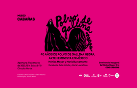
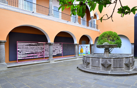
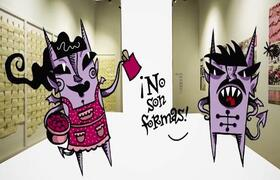

Mónica Mayer activa “El Tendedero”
11 marzo 2023
Hoy sábado 11 de marzo, el Museo Cabañas recibe la exposición “40 años de Polvo de Gallina Negra. Arte feminista en México”, que arrancará con una conferencia de Mónica Mayer, pionera del arte feminista en América Latina; la muestra es resultado de la curaduría de las investigadoras del arte, Julia Antivilo y María Laura Rosa.
Leer más...Tendedero en el Museo Amparo inaugura exposición
20 julio 2022
Tendedero en la exposición Polvo de Gallina Negra: Mal de ojo y otras recetas feministas en el Museo Amparo. El Museo Amparo presenta la exposición organizada por el Centro Nacional de Arte Contemporáneo Cerrillos, en colaboración con la Cátedra Extraordinaria Rosario Castellanos de Arte y Género.
Leer más...La Chamuca | Mónica Mayer y El tendedero @ElChamucoTV
22 octubre 2022
La chamuca usa este espacio para introducir a la gran artista mexicana Mónica Mayer, quien es considerada la pionera del performance y la gráfica digital en México, además es reconocida internacionalmente como la precursora y promotora del arte feminista. Entre muchos otros proyectos, Mónica presenta El Tendedero.
Leer más...Luchadoras, mujeres en la colección del MUAC
24 Febrero 2023
Del 24 de febrero al 21 de mayo de 2023 se presenta en la Fundación Casa de México en España la exposición Luchadoras: mujeres en la colección del MUAC, que incluye la obra de 31 artistas de generaciones y geografías distintas que reflexionan sobre la complejidad de habitar el cuerpo femenino y visibilizan la violencia.
Leer más...Mónica Mayer: Aprender a tumbar paredes
9 mayo 2022
Jesús Torrivilla conversa con Mayer sobre sus experiencias junto a Judy Chicago en el Woman’s Building, del acompañamiento de profesores como Juana Gutiérrez y Armando Torres Michúa y del arte como una forma de habitar el mundo: un ‘martillo’ para tumbar paredes y aprender a expresar sus verdades. Visita laescuela.art.
Leer más...La humanidad se ha perdido de la creatividad de las mujeres
10 Febrero 2022
Con un performance, como lo ha hecho a lo largo de sus más de 40 años de labor, la artista Mónica Mayer puso en marcha las actividades del primer Diplomado Internacional de Arte y Género organizado por la Cátedra Extraordinaria Rosario Castellanos de Arte y Género de Cultura UNAM y la Facultad de Artes y Diseño (FAD).
Leer más...